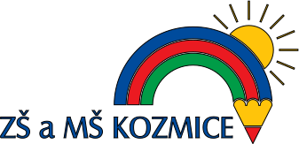

Hned co jsem získal nějaké zkušenosti, tak jsem se je pokusil aplikovat.
Aktuálně pracuji jako: - Administrátor webu ZŠ Kozmice
- Administrátor, designér a dobrovolník u neziskovky BridgeOfUkraine
- Freelancer v programování Python a Java na Fiverr
Více se dočtete zde